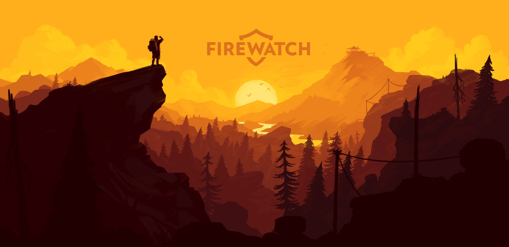

Modern Web Design: Animations, Parallax & More

(Image Credit: Unsplash)
Bringing Websites to Life
Web design has evolved so much beyond static pages. Today, we’re seeing **smooth animations, engaging micro-interactions, and immersive scrolling effects** that make websites feel truly alive.
Recently, I’ve been exploring modern web design techniques like **parallax scrolling, GSAP animations, responsive UI/UX, and dynamic API integrations**—and I’m obsessed! Let’s break it all down.
Parallax Scrolling: Adding Depth & Motion
(See it live here)
Parallax scrolling is one of my favorite effects. It creates an illusion of depth by making **background elements move at a different speed than foreground elements** when scrolling.
I’m currently experimenting with **parallax effects** for my High Altitude project to make the UI feel **dynamic and engaging**. It’s a simple yet powerful trick that instantly makes a site feel modern.
GSAP: The Magic Behind Smooth Animations
(GSAP lets you create silky-smooth animations.)
One of the coolest things I’ve learned is using GSAP (GreenSock Animation Platform). GSAP is a JavaScript library that lets you create **beautiful animations** with ease.
Why I love GSAP:
- üî• **Super smooth animations** (way better than CSS animations!)
- üî• **Optimized performance** (no lag, even on mobile)
- üî• **Works well with ScrollTrigger** for **scroll-based effects**
For example, I’m adding **fade-ins, slide effects, and hover animations** to make my projects feel interactive and **fun to explore**.
Responsive UI/UX: Designing for All Devices

(Making sure designs look great everywhere!)
There’s nothing worse than a website that **looks great on a laptop but completely breaks on mobile**. That’s why I’ve been focusing on **responsive design**—making sure my layouts work on every screen size.
Some key techniques I’ve learned:
- ✅ Using **CSS Grid & Flexbox** for flexible layouts
- ✅ Implementing **media queries** to adjust styles for different screens
- ✅ Prioritizing **mobile-first design** for better performance
I’ve also been **optimizing images and assets** so that my sites **load fast** while still looking crisp.
Dynamic Content with APIs
Another game-changer has been learning how to **fetch real-time data from APIs** to display dynamic content.
For my LitLibrary project, I’m integrating **Google Books API** to fetch book details like:
- üìö Book summaries
- ⭐ Average ratings
- üìñ Number of pages
This takes my project **to the next level**, making it feel **more interactive and useful** for users.
Final Thoughts
✨ **"Modern web design is all about creating experiences, not just pages."** ✨
Learning about **animations, responsive UI/UX, and API integrations** has completely changed how I approach web development. I can’t wait to keep experimenting and applying these concepts to my projects.
If you‚Äôre interested in these topics, I highly recommend checking out GSAP and exploring different **modern design trends**. Web development is more exciting than ever! üöÄ
üì¢ Let‚Äôs Connect!
Have you tried any of these design techniques? Let’s chat! Connect with me on LinkedIn or check out my portfolio here.